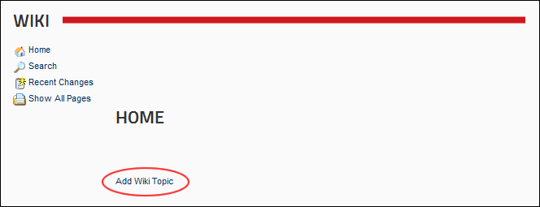
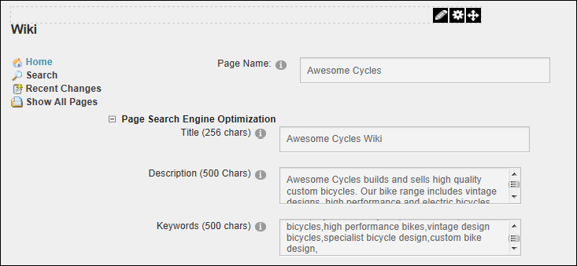
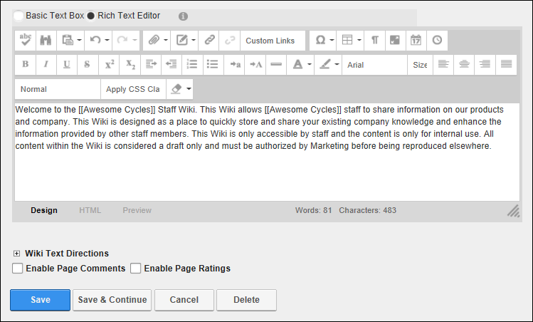
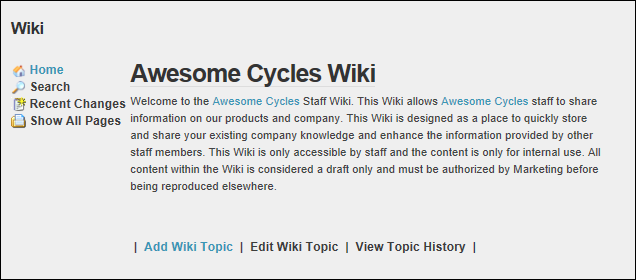

Adding a Wiki Page
How to add a new page to a Wiki module. Note: Page Name is the only required field. This allows you to create pages and then add content at a later stage.
- Click the Add Wiki Topic link.

- In the Page Name text box, enter the name for the new page. Note: The page name appears in the Wiki Index using the capitalization entered here. Note: A maximum of 50 characters is permitted.
- Optional. Maximize
 the Page Search Engine Optimization section.
the Page Search Engine Optimization section.- In the Title text box, enter a title to be displayed on this Wiki page as well as in the browser title for this page. Note: A maximum of 256 characters is permitted.
- In the Description text box, enter a description to be used in the Meta-Description tag for the HTML of the page where this module is located. Note: A maximum of 500 characters is permitted.
- In the Keywords text box, enter a description to be used in the Meta-Description tag for the HTML of the page where this module is located. Note: A maximum of 500 characters is permitted.

- In the Editor, enter the page content. Note: When you create a link to a page which does not yet exist, the page will not appear in the Wiki Index until content is added to it. For details on adding page links, Maximize the Wiki Text Directions section.
- Optional. Mark
 the check box at Enable Page Comments to enable users to post comments to this page.
the check box at Enable Page Comments to enable users to post comments to this page.
- Optional. Mark the check box at Enable Page Ratings to enable users to rate this page.
- Optional. Click the Save and Continue button to save the details entered so far and immediately continue adding content.

- Click the Save button.
